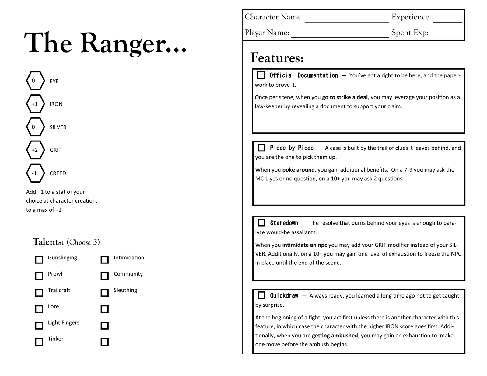

Tabletop RPG · In development
Badland Prophets
Designer, writer, layout · 2026
A Powered by the Apocalypse western about salvage crews working the edge of a storm that rewrites whatever it swallows.
The premise
A sentient dust storm covers the whole planet. The only habitable ground is inside the storm's eyes — calm openings about a mile across that drift slowly across the land, carrying caravan civilizations with them. Prophets — the pun on profits is the point — work the edges: exploring the strangeness, harvesting what the storm left behind, running jobs for coin.
The storm's signature is transformation. Things it swallows come back twisted, fused, relocated, or inverted in one core aspect: coal that won't burn, a pickaxe that shatters into gems, a revolver that heals the people it shoots. Sometimes the changes read like messages nobody can decode. Whether the storm wants anything is deliberately left open for each table to decide.
Thesis: community versus survival. Tone: pulpy weird western.
The Ranger — playbook sheet
The current playbook artifact, laid out as a single-page character sheet. Five stats — EYE, IRON, SILVER, GRIT, CREED — carry the whole system; the stat names are the game's thesis stated in five words, and every one of them has a strange application, so the weird isn't quarantined in a single "magic" stat.

Each feature does a different structural job rather than adding a different damage number. Official Documentation is a once-per-scene fiction permission — you have the paperwork, so the deal opens. Piece by Piece converts a partial success into information, turning the middle result band into an investigation engine. Staredown lets the Ranger substitute GRIT for SILVER when intimidating, which quietly reroutes a social move through a stat the archetype actually has. Quickdraw resolves initiative and ambushes at once, and breaks ties with IRON rather than a die.
Two of the four also spend exhaustion to escalate on a strong result — the character's ceiling is real but it costs something to reach.
Design notebook
Before the sheet there was a long argument with the system. The notebook works through what Powered by the Apocalypse is actually good at, what it resists, and which of its assumptions to keep — then builds the game from a one-sentence thesis outward: stats, then basic moves, then playbooks, then harm, then the reward loop.
A few decisions I'd point at:
Promises bind, and they don't roll
When you make a promise with your hand on something that matters, it binds — no dice. Keep it and you take a bonus to anything done in its service. Break it and the wronged party learns instantly and infallibly; the dust carries word. The storm keeps accounts. Nobody knows how.
This makes word-keeping the social physics of the setting rather than a roleplaying flourish, and it costs one paragraph of rules text.
A failed prophecy is still a true one
On the worst result of the game's divination move, you still get a vision, and it is still true — but the GM decides what it's about, and it comes true sideways. Write it down. It cannot be untrue.
Misses generate binding foreshadowing instead of nothing happening. Every unresolved vision is a debt the fiction owes, and the GM keeps a visible list of them.
The duel is about stakes, not survival
Before a showdown, both sides declare aloud what they're truly fighting for. Then one roll settles it — NPCs never roll, so the player's die is the whole duel. The declaration is what gives a partial success something to take away: you win, but what you declared comes to you broken, or witnessed, or with their people taking up the grudge.
Harm is a condition with a named cure
No hit points. You take Winged, Shaken, Parched, Disgraced, or Marked — each penalizing a specific kind of move and each naming what clears it: a night's rest, leaning on someone at the campfire, public restitution. Marked has no known cure; it fades when the storm forgets you.
Recovery becomes a scene someone has to play rather than a number someone restores.
The notebook also carries a twelve-playbook roster with a redundancy audit attached: every playbook owns one verb nobody else has. The Dowser reads the storm, the Reclaimer values what comes out of it, the Coyote crosses it, the Undertaker buries what it returns. If a new move drifts onto another playbook's verb, it gets cut or relocated. That rule has killed more of my ideas than any other.
Where it stands
- Written
- Design guide, basic and exploration move sets, a worked example of play, the Ranger playbook sheet
- Next
- The inversion oracle — random tables for how people, tools, and places come back changed — then a one-shot playtest on the trail
- Open question
- Whether the move count survives contact with a table. Eighteen moves before playbooks is the high end of healthy.